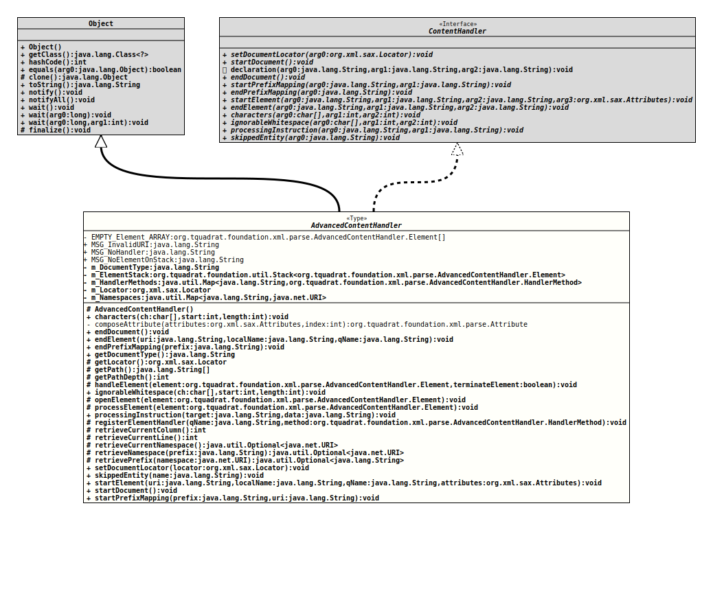

Class AdvancedContentHandler
- All Implemented Interfaces:
ContentHandler
This class implements the interface
ContentHandler
as a base class for more advanced versions of the
DefaultHandler class
or for stand-alone use.
Instead of implementing the three methods
characters(),
endElement(),
and
startElement()
only handlers for the elements have to implemented; after registration of
these handlers using
registerElementHandler(String, HandlerMethod)
these handler methods will be called automatically by the default
implementations of
processElement()
and
openElement().
These method can still be overwritten if a different processing is
desired. When
processElement()
is called after the element is terminated, the attributes together with the
character data after closing the element is provided. The method
openElement()
is called each time an element will be opened, providing the attributes
only.
Some convenience methods have been implemented that will give access to the parent element and to the path down to the current element.
Note: Unfortunately, this class do not work for XML streams that has elements embedded into text, as it is usual for HTML. The snippet
<p>First Text <b>Bold Text</b> Second Text</p>will be parsed as "First Text Second Text" for the p
element and "Bold Text" for the b element; the
information that the b element was embedded in between is lost.
- Author:
- Thomas Thrien (thomas.thrien@tquadrat.org)
- Version:
- $Id: AdvancedContentHandler.java 1101 2024-02-18 00:18:48Z tquadrat $
- Since:
- 0.0.5
- UML Diagram
-

UML Diagram for "org.tquadrat.foundation.xml.parse.AdvancedContentHandler"
{kind=link}
-
Nested Class Summary
Nested ClassesModifier and TypeClassDescriptionprotected static final classThis class serves a container for the name, the data and the attributes of an XML element.protected static interfaceThe functional interface describing a method that processes an XML element. -
Field Summary
FieldsModifier and TypeFieldDescriptionprivate static final AdvancedContentHandler.Element[]An empty array of Element objects.private StringThe document type.private final Stack<AdvancedContentHandler.Element> This stack contains the open elements, stored as instances ofAdvancedContentHandler.Element.private final Map<String, AdvancedContentHandler.HandlerMethod> The element handler methods.private LocatorThe locator.The name spaces.static final StringThe message indicating an invalid URI: "Invalid namespace URI: %s".static final StringThe message indicating that there is no element on the stack: "No element on stack".static final StringThe message indicating that there is no element handler for the given element: "No handler for element \'%1$s\'". -
Constructor Summary
Constructors -
Method Summary
Modifier and TypeMethodDescriptionfinal voidcharacters(char[] ch, int start, int length) Receives notification of character data inside an element.private static final AttributecomposeAttribute(Attributes attributes, int index) Composes anAttributeinstance from the data of the givenAttributesinstance at the given index.voidReceives the notification about the end of the document.
This implementation does nothing by default.final voidendElement(String uri, String localName, String qName) Receives the notification about the end of an element.final voidendPrefixMapping(String prefix) Receives the notification of the end for a name space mapping.final StringReturns the name of the document type.protected final LocatorReturns a copy of the locator.protected final String[]getPath()Returns the path for the element as an array, with the qualified element names as the entries in the array.protected final intReturns the path depth for the element.protected voidhandleElement(AdvancedContentHandler.Element element, boolean terminateElement) The default element handling; it does nothing.voidignorableWhitespace(char[] ch, int start, int length) Receives the notification of ignorable whitespace in element content.
This implementation does nothing by default.protected voidThis method is called every time a new element was encountered by the parser.protected voidProcessing of an element of the XML file.voidprocessingInstruction(String target, String data) Receives notification of a processing instruction.
This implementation does nothing by default.protected final voidregisterElementHandler(String qName, AdvancedContentHandler.HandlerMethod method) Adds an element handler to the map of handler methods.protected final intReturns the current column number in the XML file.protected final intReturns the current line number in the XML file.Returns the namespace for the current element (that one that is on top of the element stack).retrieveNamespace(String prefix) Returns the URI of the namespace for the given prefix.retrievePrefix(URI namespace) Returns the registered prefix for the given namespace.final voidsetDocumentLocator(Locator locator) Receives an object for locating the origin of SAX document events.
SAX parsers are strongly encouraged (though not absolutely required) to supply a locator: if it does so, it must supply the locator to the application by invoking this method before invoking any of the other methods in the ContentHandler interface.
The locator allows the application to determine the end position of any document-related event, even if the parser is not reporting an error.voidskippedEntity(String name) Receives notification of a skipped entity.voidReceives the notification of the beginning of the document.
This implementation does nothing by default.final voidstartElement(String uri, String localName, String qName, Attributes attributes) Receives the notification about the start of an element.final voidstartPrefixMapping(String prefix, String uri) Receives the notification of the start of a Namespace mapping.Methods inherited from class java.lang.Object
clone, equals, finalize, getClass, hashCode, notify, notifyAll, toString, wait, wait, waitMethods inherited from interface org.xml.sax.ContentHandler
declaration
-
Field Details
-
EMPTY_Element_ARRAY
An empty array of Element objects. -
MSG_InvalidURI
The message indicating an invalid URI: "Invalid namespace URI: %s".- See Also:
-
MSG_NoHandler
The message indicating that there is no element handler for the given element: "No handler for element \'%1$s\'".- See Also:
-
MSG_NoElementOnStack
The message indicating that there is no element on the stack: "No element on stack".- See Also:
-
m_DocumentType
The document type. -
m_ElementStack
This stack contains the open elements, stored as instances ofAdvancedContentHandler.Element. -
m_HandlerMethods
The element handler methods. The key for this map is the qualified name of the element. -
m_Locator
The locator. -
m_Namespaces
The name spaces. The prefix is the key to the map, while the URI is the value.
-
-
Constructor Details
-
AdvancedContentHandler
protected AdvancedContentHandler()The default constructor.
-
-
Method Details
-
characters
Receives notification of character data inside an element.- Specified by:
charactersin interfaceContentHandler- Parameters:
ch- The characters.start- The start position inside the characters array.length- The length of the subset to process.- Throws:
SAXException- Something has gone wrong.
-
composeAttribute
private static final Attribute composeAttribute(Attributes attributes, int index) throws IllegalArgumentException, URISyntaxException Composes anAttributeinstance from the data of the givenAttributesinstance at the given index.- Parameters:
attributes- The attributes.index- The index.- Returns:
- The attribute.
- Throws:
URISyntaxException- The URI for the attribute's namespace cannot be parsed correctly.IllegalArgumentException- The attribute type is invalid.
-
endDocument
Receives the notification about the end of the document.
This implementation does nothing by default. Application writers may override this method in a subclass to take specific actions at the end of a document (such as finalising a tree or closing an output file).- Specified by:
endDocumentin interfaceContentHandler- Throws:
SAXException- Any SAX exception, possibly wrapping another exception.
-
endElement
Receives the notification about the end of an element. This method will call theprocessElement()method and afterwards it will remove the element from the stack - in exactly that order, otherwise thegetPath()method would return wrong results.- Specified by:
endElementin interfaceContentHandler- Parameters:
uri- The URI for the namespace of this element; can be empty.localName- The local name of the element.qName- The element's qualified name.- Throws:
SAXException- The element was not correct according to the DTD.
-
endPrefixMapping
Receives the notification of the end for a name space mapping.- Specified by:
endPrefixMappingin interfaceContentHandler- Parameters:
prefix- The Namespace prefix being declared.- Throws:
SAXException- Any SAX exception, possibly wrapping another exception.
-
getDocumentType
Returns the name of the document type.- Returns:
- The document type.
-
getLocator
Returns a copy of the locator.- Returns:
- A copy of the locator object or
nullif there was none provided by the parser.
-
getPath
Returns the path for the element as an array, with the qualified element names as the entries in the array. The array is ordered in the way that the current element is at position[0], while the root element (the document element) is at[length - 1].- Returns:
- The list of element names that build the path to the current element.
-
getPathDepth
Returns the path depth for the element.- Returns:
- The number of nodes on the path to the current element. 0 means that the current element is the document.
-
handleElement
@MountPoint @API(status=MAINTAINED, since="0.1.0") protected void handleElement(AdvancedContentHandler.Element element, boolean terminateElement) throws SAXException The default element handling; it does nothing.- Parameters:
element- The element.terminateElement-trueif called byprocessElement(Element), indicating that the element processing will be terminated,falsewhen called byopenElement(Element).- Throws:
SAXException- The element cannot be handled properly.- Since:
- 0.1.0
-
ignorableWhitespace
Receives the notification of ignorable whitespace in element content.
This implementation does nothing by default. Application writers may override this method to take specific actions for each chunk of ignorable whitespace (such as adding data to a node or buffer, or printing it to a file).- Specified by:
ignorableWhitespacein interfaceContentHandler- Parameters:
ch- The whitespace characters.start- The start position in the character array.length- The number of characters to use from the character array.- Throws:
SAXException- Any SAX exception, possibly wrapping another exception.
-
openElement
@MountPoint @API(status=MAINTAINED, since="0.1.0") protected void openElement(AdvancedContentHandler.Element element) throws SAXException This method is called every time a new element was encountered by the parser. It should be overwritten if it is necessary to perform any activities for a specific element.
The default implementation looks up a method handler in the map of element handlers and calls that, or throws an exception if no handler was registered for that element.- Parameters:
element- The element.- Throws:
SAXException- Something has gone wrong.- Since:
- 0.1.0
-
processElement
@MountPoint @API(status=MAINTAINED, since="0.1.0") protected void processElement(AdvancedContentHandler.Element element) throws SAXException Processing of an element of the XML file. This method will be called byendElement()any time an element was closed.
The default implementation looks up a method handler in the map of element handlers and calls that, or throws an exception if no handler was registered for that element.- Parameters:
element- The element.- Throws:
SAXException- Something has gone wrong.- Since:
- 0.1.0
-
processingInstruction
Receives notification of a processing instruction.
This implementation does nothing by default. Application writers may override this method in a subclass to take specific actions for each processing instruction, such as setting status variables or invoking other methods.- Specified by:
processingInstructionin interfaceContentHandler- Parameters:
target- The processing instruction target.data- The processing instruction data, ornullif none is supplied.- Throws:
SAXException- Any SAX exception, possibly wrapping another exception.
-
registerElementHandler
protected final void registerElementHandler(String qName, AdvancedContentHandler.HandlerMethod method) Adds an element handler to the map of handler methods.- Parameters:
qName- The qualified name of the elements that should be processed by the handler .method- The method reference for the handler.
-
retrieveCurrentColumn
Returns the current column number in the XML file. A negative value indicates that the column is unknown.- Returns:
- The current column number.
-
retrieveCurrentLine
Returns the current line number in the XML file. A negative value indicates that the line is unknown.- Returns:
- The current line number.
-
retrieveCurrentNamespace
@API(status=MAINTAINED, since="0.1.0") protected final Optional<URI> retrieveCurrentNamespace() throws SAXExceptionReturns the namespace for the current element (that one that is on top of the element stack).- Returns:
- An instance of
Optionalthat holds the namespace for the current element. Will be empty if there is no namespace for the current element. - Throws:
SAXException- An error occurred while retrieving the namespace information.- Since:
- 0.1.0
-
retrieveNamespace
@API(status=MAINTAINED, since="0.1.0") protected final Optional<URI> retrieveNamespace(String prefix) Returns the URI of the namespace for the given prefix. -
retrievePrefix
@API(status=MAINTAINED, since="0.1.0") protected final Optional<String> retrievePrefix(URI namespace) Returns the registered prefix for the given namespace. If more than one prefix is registered for the same namespace, only that one that is alphabetically the first one will be returned.- Parameters:
namespace- The URI for the namespace.- Returns:
- An instance of
Optionalthat holds the registered prefix. - Since:
- 0.1.0
-
setDocumentLocator
Receives an object for locating the origin of SAX document events.
SAX parsers are strongly encouraged (though not absolutely required) to supply a locator: if it does so, it must supply the locator to the application by invoking this method before invoking any of the other methods in the ContentHandler interface.
The locator allows the application to determine the end position of any document-related event, even if the parser is not reporting an error. Typically, the application will use this information for reporting its own errors (such as character content that does not match an application's business rules). The information returned by the locator is probably not sufficient for use with a search engine.
Note that the locator will return correct information only during the invocation SAX event callbacks after startDocument returns and before endDocument is called. The application should not attempt to use it at any other time.- Specified by:
setDocumentLocatorin interfaceContentHandler- Parameters:
locator- An object that can return the location of any SAX document event.
-
skippedEntity
Receives notification of a skipped entity.
This implementation does nothing by default. Application writers may override this method in a subclass to take specific actions for each processing instruction, such as setting status variables or invoking other methods.
- Specified by:
skippedEntityin interfaceContentHandler- Parameters:
name- The name of the skipped entity.- Throws:
SAXException- Any SAX exception, possibly wrapping another exception.
-
startElement
public final void startElement(String uri, String localName, String qName, Attributes attributes) throws SAXException Receives the notification about the start of an element.- Specified by:
startElementin interfaceContentHandler- Parameters:
uri- The URI for the namespace of this element; can be empty.localName- The local name of the element.qName- The element's qualified name.attributes- The element's attributes.- Throws:
SAXException- The element was not correct according to the DTD.
-
startDocument
Receives the notification of the beginning of the document.
This implementation does nothing by default. Application writers may override this method in a subclass to take specific actions at the beginning of a document (such as allocating the root node of a tree or creating an output file).- Specified by:
startDocumentin interfaceContentHandler- Throws:
SAXException- Any SAX exception, possibly wrapping another exception.
-
startPrefixMapping
Receives the notification of the start of a Namespace mapping.- Specified by:
startPrefixMappingin interfaceContentHandler- Parameters:
prefix- The Namespace prefix being declared.uri- The Namespace URI mapped to the prefix.- Throws:
SAXException- Any SAX exception, possibly wrapping another exception.
-